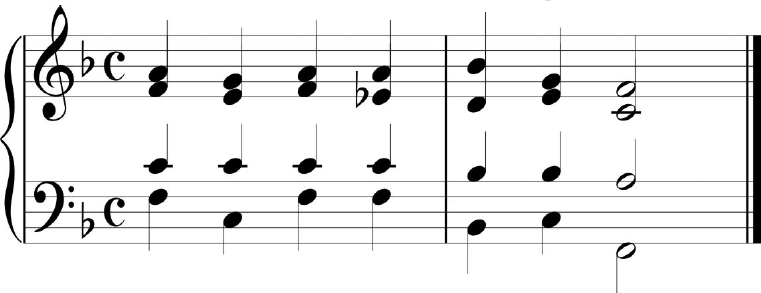

Analise o exemplo musical a seguir:

Em relação a esse trecho, considere as
afirmativas:
-
A tonalidade é Si bemol Maior.
-
O primeiro compasso contém três funções
harmônicas diferentes.
-
O primeiro compasso começa na
dominante.
-
O segundo compasso começa na tônica.
-
A progressão é característica do estilo
romântico.
É CORRETO o que se afirma em
-
II.
-
V.
-
I e V.
-
I, III e IV.
-
II, III e IV.